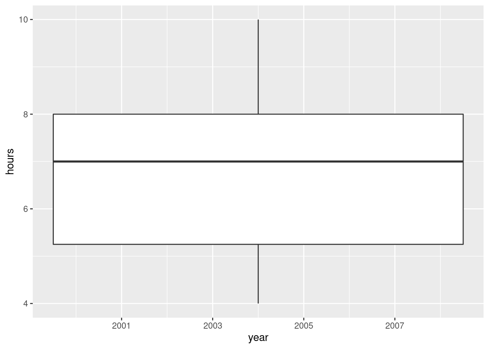
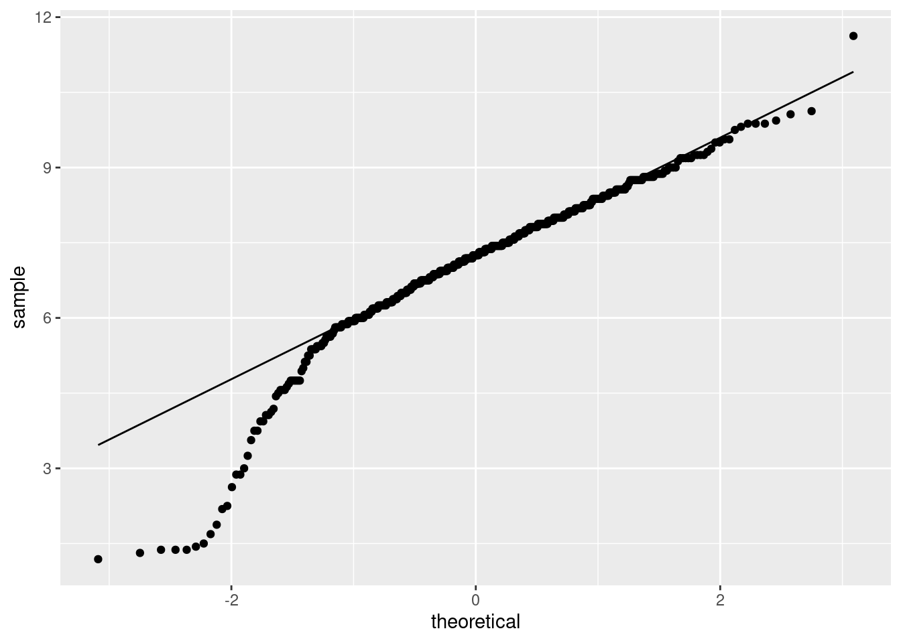

Chapter 11 Handspans of males and females
Take your right hand, and stretch the fingers out as far as you can. The distance between the tip of your thumb and the tip of your little (pinky) finger is your handspan. The students in a Statistics class at Penn State measured their handspans and also whether they identified as male or female. The data are at , with handspans measured in inches. Thinking of these as a random sample of all possible students, is it true that males have a larger mean handspan than females? This is what we will explore.
- Read in and display (some of) the data.
Solution
This is a delimited (by spaces) file, so:
library(tidyverse)
my_url <- "http://ritsokiguess.site/datafiles/handspan.txt"
span <- read_delim(my_url, " ")##
## ── Column specification ──────────────────────────────────────────────────────────────────────────────────────────────────────────────────────────────────────────────────────────────────────
## cols(
## sex = col_character(),
## handspan = col_double()
## )\(\blacksquare\)
- Make a suitable graph of the two columns.
Solution
One quantitative variable and one categorical one, so a boxplot:

\(\blacksquare\)
- Run a suitable two-sample \(t\)-test to address the question of interest. What do you conclude, in the context of the data?
Solution
We are trying to show that males have a mean handspan, so we need an . To see which: there are two sexes, F and M in that order, and we are trying to show that F is less than M:
##
## Welch Two Sample t-test
##
## data: handspan by sex
## t = -10.871, df = 187.92, p-value < 2.2e-16
## alternative hypothesis: true difference in means is less than 0
## 95 percent confidence interval:
## -Inf -2.154173
## sample estimates:
## mean in group F mean in group M
## 20.01699 22.55747The P-value is very small, so there is no doubt that males have larger average handspans than females.
\(\blacksquare\)
- Obtain a 90% confidence interval for the difference in mean handspan between males and females. Do you need to run any more code? Explain briefly.
Solution
A confidence interval is two-sided, so we have to re-run the test without the to make it two-sided. Note also that we need a 90% interval, which is different from the default 95%, so we have to ask for that too:
##
## Welch Two Sample t-test
##
## data: handspan by sex
## t = -10.871, df = 187.92, p-value < 2.2e-16
## alternative hypothesis: true difference in means is not equal to 0
## 90 percent confidence interval:
## -2.926789 -2.154173
## sample estimates:
## mean in group F mean in group M
## 20.01699 22.55747The interval is \(-2.93\) to \(-2.15\), . It would be even better to say that males have a mean handspan between 2.15 and 2.93 inches larger than that of females. You also need to round off your answer: the data are given to 0 or 1 decimals, so your interval should be given to 1 or 2 decimals (since the confidence interval is for a mean).
On a question like this, the grader is looking for three things:
- getting the output
- saying what the interval is
- rounding it to a suitable number of decimals.
Thus, getting the output alone is only one out of three things.
\(\blacksquare\)
- Explain briefly why you might have some concerns about the validity of the \(t\)-tests you ran in this question. Or, if you don’t have any concerns, explain briefly why that is.
Solution
The major assumption here is that the male and female handspans have (approximate) normal distributions. The boxplots we drew earlier both had low-end outliers, so the normality is questionable.
Also, say something about the sample sizes and whether or not you think they are large enough to be helpful.
How big are our sample sizes?
My suspicion is that we are saved by two things: the sample sizes are large enough for the central limit theorem to help us, and in any case, the conclusion is so clear that the assumptions can afford to be off by a bit.
Extra: one way to think about whether we should be concerned about the lack of normality is to use the to see what the sampling distribution of the sample mean might look like for males and for females. (This is the stuff in Lecture 5a.) The way this works is to sample from each distribution , work out the mean of each sample, then repeat many times, once for the females and once for the males.
To start with the females, the first thing to do is to grab only the rows containing the females. This, using an idea from Lecture 5a that we see again properly later, is filter:
There are 103 females. From these we need to take a “large” number of bootstrap samples to get a sense of how the mean handspan of the females varies:
set.seed(457299)
tibble(sim = 1:1000) %>%
rowwise() %>%
mutate(the_sample = list(sample(females$handspan, replace = TRUE))) %>%
mutate(the_mean = mean(the_sample)) -> dThen we make a histogram of the bootstrap sampling distribution of the sample mean for the females:

I don’t know what you think of this. There are a few more extreme values than I would like, and it looks otherwise a bit left-skewed to me. But maybe I am worrying too much.
The males one works exactly the same way:
span %>% filter(sex=="M") -> males
tibble(sim = 1:1000) %>%
rowwise() %>%
mutate(the_sample = list(sample(males$handspan, replace = TRUE))) %>%
mutate(the_mean = mean(the_sample)) -> d
There is a similar story here. I think these are good enough overall, and so I am happy with the two-sample \(t\)-test, but it is not as clear-cut as I was expecting.
\(\blacksquare\)